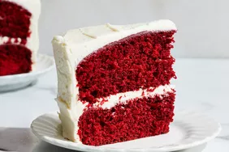

Red Velvet Cake

Description
This classic Red Velvet Cake recipe is a festive, crowd-pleasing dessert known for its vibrant red hue,
tender crumb, and rich flavor. It begins by creaming sugar and shortening, then blending in eggs and
a cocoa-red food coloring paste for its signature color. Buttermilk, flour, and a touch of vinegar and
baking soda are added to create a moist, fluffy texture with a subtle tang. The cake is baked in two
9-inch layers and cooled before being frosted with a unique cooked flour icing which is made by thickening milk
and flour, then whipping it with butter, sugar, and vanilla until light and creamy. The result is a nostalgic,
velvety cake with a smooth, not-too-sweet frosting that's perfect for holidays or special occasions.
Ingredients
Cake:
- 1 ½ cups white sugar
- ½ cup shortening
- 2 eggs
- 4 tablespoons red food coloring
- 2 tablespoons cocoa
- 1 cup buttermilk
- 1 teaspoon salt
- 1 teaspoon vanilla extract
- 2 ½ cups sifted all-purpose flour
- 1 tablespoon distilled white vinegar
- 1 ½ teaspoons baking soda
Icing:
- 1 cup milk
- 5 tablespoons all-purpose flour
- 1 cup white sugar
- 1 cup butter, room temperature
- 1 teaspoon vanilla extract
Steps
- Preheat the oven to 350 degrees F (175 degrees C). Grease two 9-inch round pans.
- Make the cake: Beat 1 1/2 cups sugar and shortening together in a large bowl with an electric mixer until light and fluffy. Add eggs one at a time, beating well after each addition. Combine red food coloring and cocoa to make a paste; add to creamed mixture.
- Mix buttermilk, salt, and 1 teaspoon vanilla together in a small bowl. Add flour, alternating with buttermilk mixture, mixing just until incorporated.
- Mix vinegar and baking soda together; gently fold into cake batter and pour into prepared pans.
- Bake in the preheated oven until a toothpick inserted into the center comes out clean, about 30 minutes. Cool on a wire rack for 5 minutes. Run a table knife around the edges to loosen. Invert carefully onto a serving plate or cooling rack. Let cool, about 30 minutes.
- Make the icing: Heat milk and flour in a saucepan over low heat, stirring constantly, until thick. Set aside to cool completely.
- Meanwhile, beat sugar, butter, and vanilla together in a large bowl with an electric mixer until light and fluffy. Add cooled flour mixture and beat until frosting is a good spreading consistency. Frost cake layers when completely cool.
Back to home page